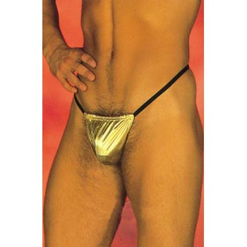

面对本ID，左右派同穿一条内裤说明了什么？
2006/3/5 23:16:54

本ID反左反右反中间反男人反反对一切，当然要得罪一大批人，绝对不招人待见，这就构成了左右两派经常在本ID面前一起语无伦次、文字白花花地喷发的基本前提。但最绝的是，经常打架的左右两派，面对本ID时竟然可以突然历史性地统一起来，甚至同穿一条内裤，这说明了什么？
众所周知，左派经常污蔑本ID是一个小组，是收美金的，是来对付他们的，是来拔他们旗的，而最近同样的口气竟然出现在右派嘴里：“数女不是女的,也不是一个人，而是一个御用的阴谋而已。”看来左派右派，都是天生被虐狂，而且天生无能且都需要谁用谁知道。面对本ID，左右派同穿一条内裤说明了什么？说明了本ID“左派是流氓，右派是白痴”结论的正确，只是必须说明的是，流氓是白痴的流氓，白痴是流氓的白痴，本质上是一样的。
左派、右派，只不是同一棵树上长出的种子干瘪的团状物，他们相互的攻击构成的网络喧嚣只不过是如流浪野猫叫春一般的荒淫无耻。他们需要抱团，他们需要扯旗，以此来掩盖他们的无能。左派、右派本质上是同构的，当这派指责对方是强盗、刽子手、杀人狂魔时，只是因为自己暂时没能力去当强盗、刽子手、杀人狂魔，一旦有机会，就会变本加厉地补回来。他们都有各自的漂亮词汇来招揽顾客，本质上和某种特殊行业没有任何区别，一群可怜的被消费者！
面对本ID，左右派同穿一条内裤，左派右派共同演示了人类历史上最丑恶无聊的闹剧，善良的人们，不要相信任何这派那派的，包括什么中间派的废柴，还有那些什么清流，看看如傅斯年、李敖等的表演就知道了。人，首先是一个人，没有独立的思想，人就不是人。什么派别、清流的烂玩意，非人道毁灭去吧！